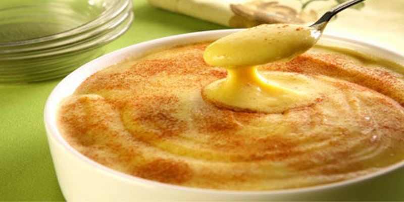

Mingau de Milho Verde

INGREDIENTES
- 200ml de leite
- açúcar à gosto
- 02 colheres (sopa) de fubá de milho
- sal à gosto
- canela em pó à gosto
PORÇÕES
Serve 1 pessoas
TEMPO DE PREPARO
20 minutos
PASSO A PASSO
- Em uma panela, coloque todos os ingredientes, misture e leve ao fogo.
- Deixe cozinhar por 15 minutos, mexendo sempre.
- Retire do fogo.
- Povilhe canela em pó e sirva.